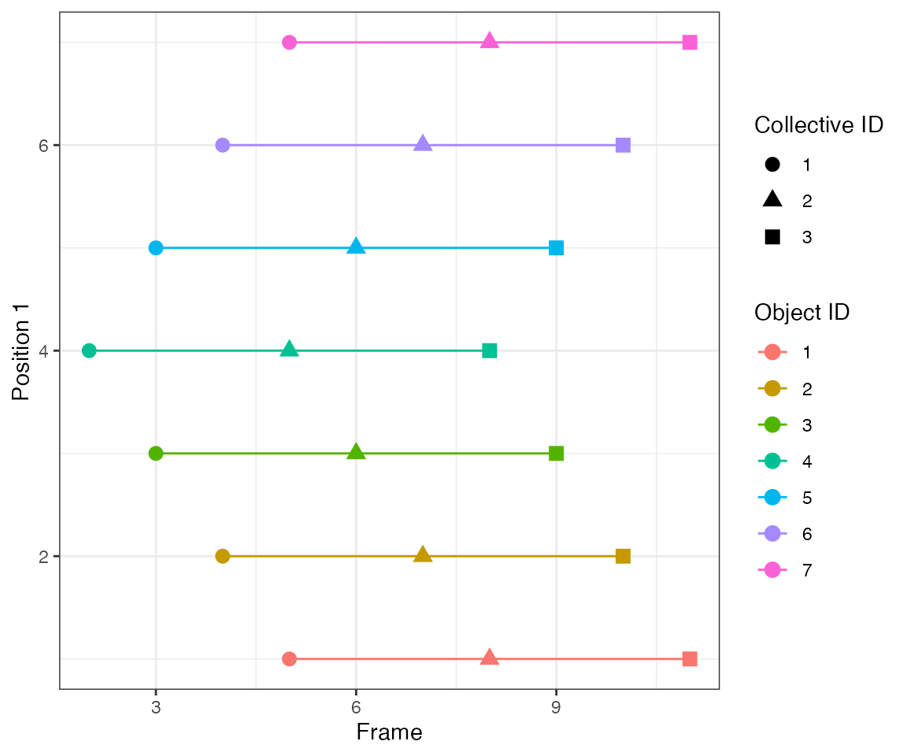
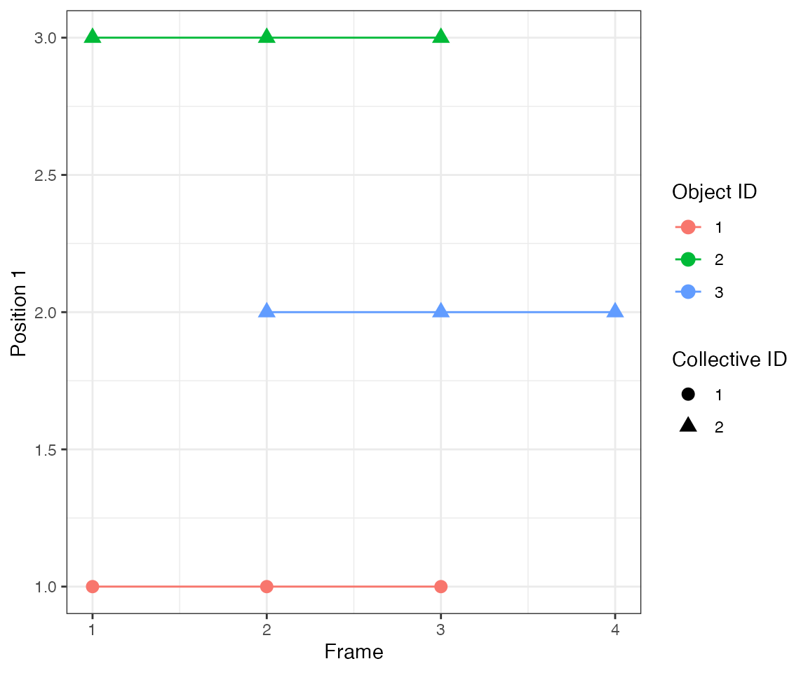
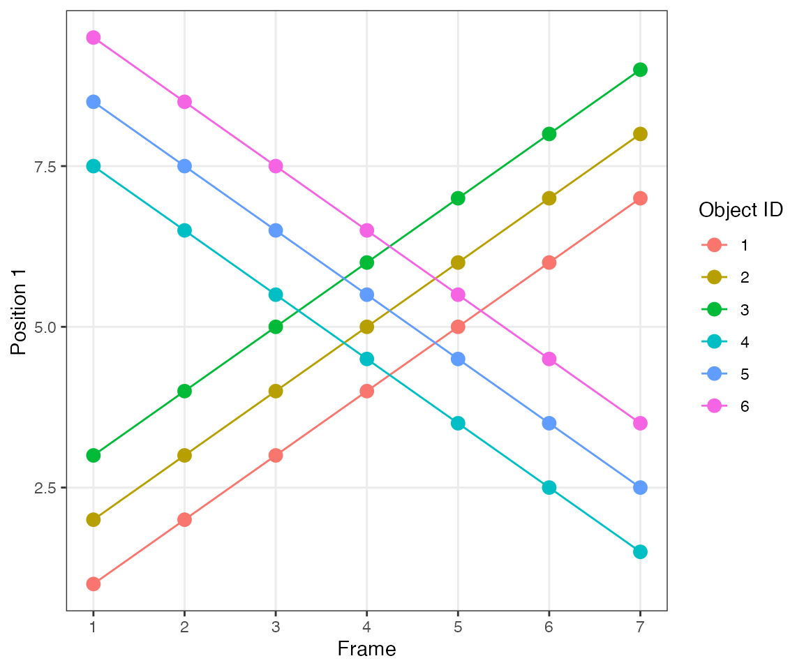

library(ARCOS)
library(data.table)
library(ggplot2)
library(ggthemes)
library(testthat)
## Custom functions
# Wrapper function for testing
myTest = function(inDTcalc, inFtrue, inDir = "testdata") {
resTest = testthat::test_that("test chunk", {
locDTtrueRes = fread(file.path(system.file(inDir,
package="ARCOS"),
inFtrue))
attr(inDTcalc, "sorted") = NULL
attr(inDTcalc, "class") = c("data.table", "data.frame")
if ("clTrackID" %in% names(locDTtrueRes)) setnames(inDTcalc, "collid", "clTrackID")
expect_equal(inDTcalc,
locDTtrueRes)
})
}Link 1 frame
Only spatial clusters in consecutive frames are linked.
Test 1 - 1 central
A single object that is active at frames 2, [4,5], and [7,9]. There are gaps of inactivity at frames 3 and 6.
dts = ARCOS::loadDataFromFile(file.path(system.file("testdata", package="ARCOS"), "1central_in.csv"),
colPos = "x",
colMeas = "m",
colFrame = "time",
colIDobj = "trackID")
ARCOS::plotTracks(dts, size = 3)The parameter nPrev = 1L tells the tracking algorithm to
link events only from consecutive frames, i.e. it looks back
only 1 frame. Hence, clustering will yield 3 events at frames 2, [4,5],
[7,8,9].
dcoll = ARCOS::trackColl(obj = dts[m>0],
eps = 1.0,
minClSz = 1L,
nPrev = 1L,
deb = F)
ARCOS::plotTracks(dcoll, size = 3)
[32mTest passed
[39m 🎉
Test 2 - 3 spreading
Consider 7 objects that become subsequently active every 2 frames. It mimics an activity wave spreading from object #4 to neighbouring objects.

By linking events that are 1 frame apart (parameter
nPrev = 1L), the tracking algorithm identifies 3 collective
events.


[32mTest passed
[39m 😸
Test 3 - 5 overlapping
Consider two objects 2 spatial units apart that beocme active at overlapping time points.

[32mTest passed
[39m 😸
Test 7 - 2 with 1 common symmetric
This test addresses a problem of two different activation events (objects #1 and 2) that spread to a common, equidistant neighbour (object #3).

Since there’s no obvious way to treat this symmetric case, the algorithm assumes that the common neighbour becomes active due to one of the initiators. Here, the activation wave #2 from object #2 spreads to object #3, while the activation wave #1 from object #1 is confined only to that object.


[32mTest passed
[39m 😸
Test 8 - 2 with 1 common asymmetric
A similar situation to the previous case but object #3 is no longer equidistant to objects #1 and 2. Instead, it is closer to object #1.
Since the neighbourhood cut-off is 1 distance unit (parameter
eps), the collective activation #1 from object #1 spreads
to object #3.
dcoll = ARCOS::trackColl(obj = dts[m>0],
eps = 1.0,
minClSz = 1L,
nPrev = 1L,
deb = F)
ARCOS::plotTracks(dcoll, size = 3)
[32mTest passed
[39m 😀

Split, cross, merge
Test 8 - 2 clusters, 1 delayed
This test illustrates an important feature of the algorithm. At time 5, object #2 is within the eps radius 1.5 of object #1. This triggers the inheritance of cluster IDs of the nearest neighbours from time 4. However, the nearest neighbour of object #3 is object #4 (1.9 distance vs. 2 to object #1). Consequently, collective IDs of the new cluster are “split†between ID #1 and #2.
dcoll = ARCOS::trackColl(obj = dts,
eps = 1.5,
minClSz = 1L,
nPrev = 1L,
deb = F)
ARCOS::plotTracks(dcoll, size = 3) +
scale_x_continuous(breaks = 1:7) +
theme(panel.grid.minor = element_blank())
[32mTest passed
[39m 🥳
Test 9 - 2 clusters merging
This test illustrates another important feature of the algorithm.
dcoll = ARCOS::trackColl(obj = dts,
eps = 1.5,
minClSz = 1L,
nPrev = 1L,
deb = F)
ARCOS::plotTracks(dcoll, size = 3) +
scale_x_continuous(breaks = 1:10) +
theme(panel.grid.minor = element_blank())
[32mTest passed
[39m 😀
Test 10 - 2 big clusters crossing
This test illustrates another important feature of the algorithm.

dcoll = ARCOS::trackColl(obj = dts,
eps = 1.5,
minClSz = 1L,
nPrev = 1L,
deb = F)
ARCOS::plotTracks(dcoll, size = 3) +
scale_x_continuous(breaks = 1:10) +
theme(panel.grid.minor = element_blank())
[32mTest passed
[39m 🥳
Link 2 frames
Spatial clusters are linked 2 frames back, thus a one-frame-gap is allowed in a collective event.
Test 1 - 1 central
 Here parameter
Here parameter nPrev = 2L, which links events from two
consecutive frames, i.e. it looks back 2 frames. Hence,
clustering will yield 1 continuous events.
dcoll = ARCOS::trackColl(obj = dts[m>0],
eps = 1.0,
minClSz = 1L,
nPrev = 2L,
deb = F)
ARCOS::plotTracks(dcoll, size = 3)
[32mTest passed
[39m 🎉